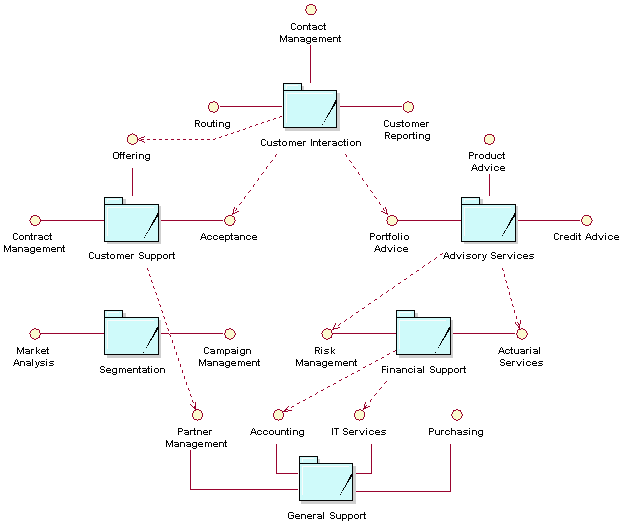
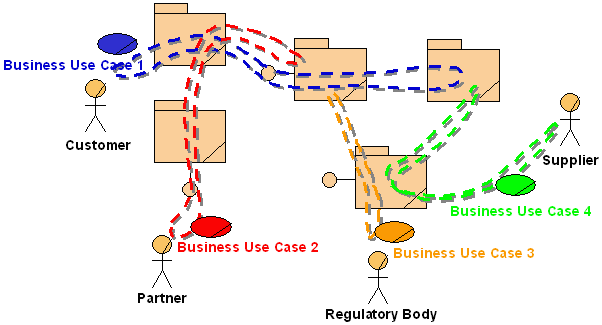
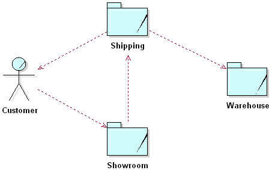
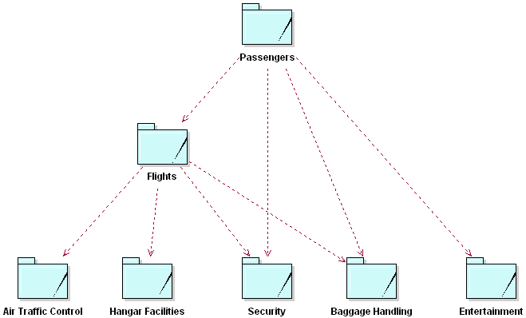

| Рекомендация: Business System |
 |
|
| Связанные элементы |
|---|
IntroductionBusiness systems represent an independent capability within a business. They are used to partition and understand the structure of a business into manageable chunks, in much the same way that an organization is typically partitioned into interdependent units. However, the role and purpose of different parts of an organization are not always clear to other parts of it, which results in less-than-optimal interactions when executing a business process. Business systems take the concept of partitioning and interdependence one step further. Business systems not only bind and contain roles and resources (and possibly other business systems), but they also explicitly define interfaces, or the set of services or responsibilities they can be asked to provide. Organizations that define service level agreements to formally specify and manage interactions between departments and external collaborators are in effect defining business systems. The use of a business system often goes hand-in-hand with using business models at different levels of abstraction (see Concept: Modeling Large Organizations). The term "business system" should not be confused with a software system. A business system contains people, hardware, and software and is therefore at a higher level of abstraction than a software system. Business Systems Enable Dynamic StructureIn his book Enterprise Modeling with UML, Chris Marshall points out that traditional relatively static organizational structures are no longer sufficient for the radically decentralized and dynamic business world that is emerging. We can no longer expect a part of the organization to remain intact for long periods of time. As he states in his book, "Value is created and delivered through value chains that form and disband over time. Indeed, the day when such a chain is formed for a single transaction may not be far away." Organizations are organic. As they feel increasing pressure from the business environment, they need to adapt to remain competitive. Taken to the extreme, a static organization structure may be crippling in a highly dynamic and ruthless business environment, and companies may need to turn to dynamic structure as a survival mechanism. In the traditional static organization structure, departmental boundaries are only conceptual. While this may be a sign of an "open" and "informal" organization, the result is that every person in and segment of the organization is intertwined with the rest of the organization. It becomes extremely difficult to change or manage one part of the organization completely independently from the other parts. Business systems enforce partitions and boundaries by disallowing interactions between business systems, except by the predefined interfaces. These interfaces (possibly formalized service-level agreements) become the hinges that support the organization. The most significant advantage to these interfaces between business systems is that different parts of the organization are decoupled from each other. Dependencies are defined in terms of responsibilities and not on how those responsibilities are carried out. Separating the specification of responsibilities from the realization of responsibilities, and binding users of the business system to services specified at its boundary, rather than binding to realizing elements inside the business system boundary, results in a nimble organization-one that is capable of changing its structure rapidly without degrading the performance of its processes. In such an organization, one of its capabilities (defined by a business system) can be modified, improved, or outsourced, and the overall effect on the rest of the organization is kept to a minimum. As long as the quality of service remains the same after the change, the business operations continue uninterrupted. The same work could be performed by a software system, one person, or an entire department-either on-site or remote. Using business events to abstract interactions could reduce direct dependencies between business systems even further. Because business events make time and space transparent, business systems can interact indirectly (see Guideline: Business Event). Note: UML Modeling Guidance for EncapsulationWhen modeling a business system with UML, we indicated in the description in Work Product: Business System that if encapsulation was not considered important, then the business system boundary was notional - as in the traditional static organization structure discussed above - and, for interaction purposes at least - the business system did not exist during business operation. You can indicate this in UML by saying that the business system (which is a kind of UML component) is not directly instantiable - it comes into being only through the instantiation of its parts. In the next section, we discuss the provision of services by business systems: in this case we are concerned with encapsulation, and can indicate that the business system has more than a notional boundary by making it directly instantiable. This verifies the business system at analysis and design time in anticipation that, in operation, the boundary will be somehow made real. Business Systems Have Well-Defined ResponsibilitiesBusiness systems explicitly define the responsibilities (also called services) that they can be asked to perform. This specification of behavior is essential because it allows the decoupling of dependencies mentioned in the previous section. A business system that does not define its services is without meaning. There is no way that another business system can know what services it provides, other than inferring them from its name. For example, we could expect a Resourcing business system (in departmental terms, it would be called Resource Management) to provide services for requesting a resource, querying the availability of resources, and possibly querying the resources types, or profiles. Responsibilities (or services) define the means of interaction with the business system and are specified as operations of the interface(s) to it. These interfaces are collections of related services and as such describe the role that the business system can play in a particular interaction. In the example that appears below the next paragraph, we see that each interface is a collection of logically related services. These interfaces (clusters of responsibility) are assigned to the business system responsible for carrying out the responsibilities. When something external to the business system requests one of the provided services, an event occurs within the business system to initiate fulfillment of the requested service. This event, which is internal to the business system, may be explicitly defined as a business event. The roles and resources (business workers and business entities) within the business system then collaborate with each other (internally) to fulfill the requested service. As we can see, this is much the same way the business operates toward its customers. In fact, we could even model the business system as a "business," in which case the requestors of services would be the business system's business actors. The example below shows the business systems of a generic financial services institution. Only some of the dependencies between business systems and interfaces are shown to improve understandability. From this diagram, it becomes apparent that the responsibilities can be reassigned by allocating an interface to another business system. This reallocation of responsibility would conceptually have no effect on the business systems that make use of those services.  Note: UML Modeling Guidance for ServicesWe noted above that modeling a business system as a directly instantiable component is a strong indicator that the business system boundary is not intended to be just conceptual. We can continue this theme by modeling the responsibilities of the business systems by an analogous application of the UML 2.0 Profile for Software Services. Although directed at software services, the fundamental ideas in this profile apply equally well to business systems. The use of UML 2.0 ports to model services further verifies the business system boundary by defining clear interaction points, with well-defined interfaces, between users and business systems. These interaction points completely insulate the implementation of the business system's responsibilities from their delivery to consumers outside the business system. This method also gives the Business-Process Analyst and then the Business Designer a way of flexibly modeling the composition and choreography of services (to deliver value-added services at the business system boundary). Business Systems Contain Roles and ResourcesA business system is an abstraction of a collection of people, hardware, and software that work together to perform the responsibilities of the business system. We use the word "abstraction" because we do not describe the internal collaborations within the business system in terms of people, machines, and software, but in terms of roles and resources. A business system contains business workers and business entities. A business worker is a role that represents a system as we define it in the glossary. As far as the business modeling effort is concerned, it is a 'leaf' system, that is, it will be decomposed no further in the business modeling effort. We may decide during our business modeling study that:
A business entity is a piece of information created or manipulated by business workers. These business workers can eventually be mapped to human resources, or to specific hardware or software systems. This abstraction helps us focus on the role and interfaces of the business worker and determine the necessary responsibilities without having to consider the (usually imperfect) real situation of a specific person or system. Note that some of the resources owned by a business system may be virtual - for example, a business system may share a large mainframe with other business systems, but as far as the business systems are concerned, they own a virtual machine. The mapping of virtual resources can be shown at the level that owns the real resource - in many cases this will be the enterprise level (the entire business). Business Use Cases Cut Across Business SystemsBusiness use cases must not be simply allocated to a business system. Business use cases are the customer-facing processes that require the collaboration of a number of business systems, partners, and suppliers. This is referred to as the value chain. Business systems collaborate to perform business use cases, as shown in the figure below.  There is one exception: When creating business models at different levels of abstraction (see Concept: Modeling Large Organizations), business use cases can be allocated to a business system. For example, you may want to model the business as a whole as well as one of the business systems of that business. In this case, there would be a Business Use-Case Model for the entire business, in which the overall business use cases would cut across the business systems (as shown above). At a lower level, the services requested from a particular business system could be captured as business use cases in the business system's Business Use-Case Model. The guideline that states that business use cases should not be allocated to a business system should then actually read: "A business use case at a particular level should not be allocated in its entirety to only one business system at a lower level." This cross-functional nature of business use cases is one of the reasons for the interest in business modeling and re-engineering, as well as in analysis of the cost and performance of business processes (see Concept: Activity-Based Costing). It is more valuable to understand how the cost of the entire business use case relates to the added value provided to the customer than to know how the annual budget of one of the departments relates to the overall corporate budget. ExamplesFurniture StoreThe figure below shows the business systems for the furniture store used as an example in Guideline: Business Goal and Guideline: Business Use-Case Model. This store keeps large inventory in a warehouse attached to its showroom. This allows customers to browse through the products on display in the showroom and pick up the products they have purchased at the warehouse. Customers can arrange for delivery of large items.  This business has been divided into three interdependent business systems. Each business system has a clear purpose and provides well-defined services (not visible in the diagram). Explicitly defining these interdependencies and interactions helps to optimize the business. AirportAn airport provides services to airlines and to passengers and visitors on behalf of the airlines. Because an airport is a very large and complex business to model, it makes sense to divide it into a number of independent business systems. Each business system can then be modeled independently as a business in its own right, as shown below.  In the example above, we see that an airline would have to participate in the Passengers and Flights business systems. Air traffic would be regulated by Air Traffic Control, according to laws and regulations. Hangar Facilities would provide services to the ground crews of the airline. Both Passengers and Flights would use services provided by Baggage Handling for departures and arrivals, respectively. The entertainment business system could also be called Airport Facilities and would include such things as shops, waiting areas, parking, and transport. |
© Copyright IBM Corp. 1987, 2006. Все права защищены.. |